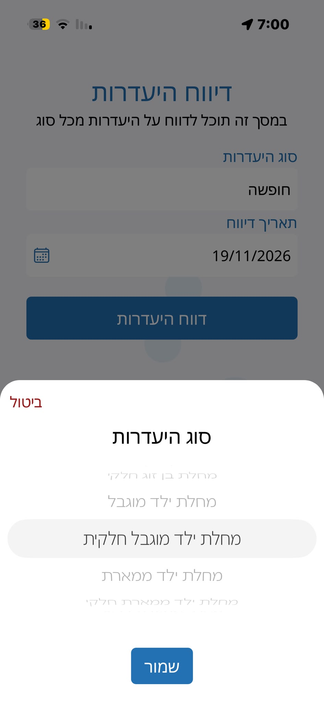
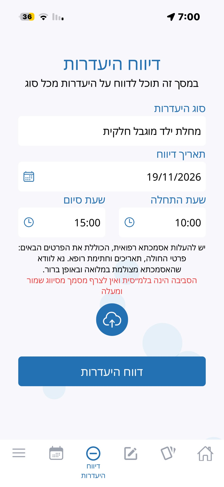
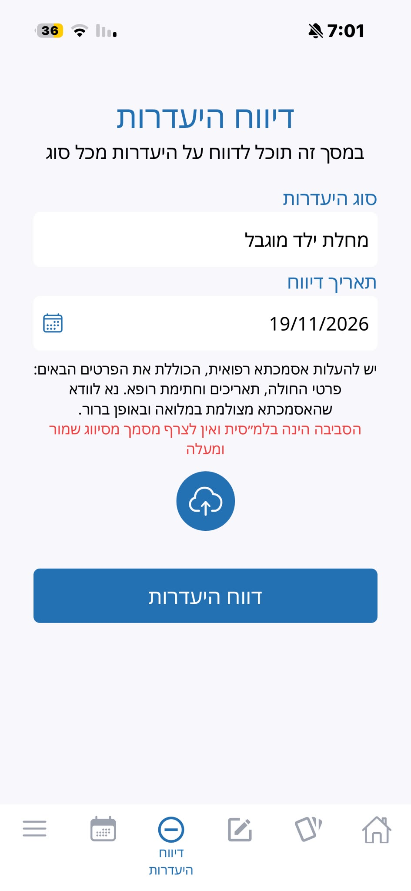

איך מדווחים היעדרות
רצף הפעולות
-
ממלאים נספח ג׳ לכל היעדרות
לכל היעדרות ממלאים הצהרה נפרדת, עם התאריך והשעות.
-
מצרפים נספחים או אסמכתאות לפי הצורך
נספח ד׳ למימוש מכסה מורחבת. נספח ה׳ לאפוטרופוס או להורה במשפחת אומנה.
בהיעדרות לצורך ליווי, סיוע או השגחה שאינם קשורים לטיפול רפואי או פרא־רפואי, מספיק נספח ג׳ בלבד.
-
מדווחים בערוץ המתאים
ב־PUNCH IT, בלביא WEB או דרך קצין משא״ן ע״צ. פרטים בהמשך.
-
בודקים בדו״ח התעסוקה
מוודאים שהתאריך, היקף ההיעדרות והסיווג נכונים.
דיווח באפליקציית PUNCH IT
באפליקציה יש שני סוגי היעדרות להורה לילד עם מוגבלות:
- ״מחלת ילד מוגבל״ – היעדרות של יום מלא.
- ״מחלת ילד מוגבל חלקית״ – היעדרות לפי שעות.
-
בוחרים את סוג ההיעדרות
פותחים את PUNCH IT ונכנסים ל״דיווח היעדרות״ בסרגל התחתון.
לוחצים על השדה ״סוג היעדרות״. ברשימה שנפתחת בוחרים ״מחלת ילד מוגבל״ או ״מחלת ילד מוגבל חלקית״, ולוחצים ״שמור״.

בחירת סוג ההיעדרות מהרשימה -
היעדרות לפי שעות: תאריך ושעות
אחרי שבחרתם ״מחלת ילד מוגבל חלקית״, בוחרים ״תאריך דיווח״, ״שעת התחלה״ ו״שעת סיום״.
אי אפשר לדווח על תאריך עתידי.

דיווח לפי שעות: תאריך, שעת התחלה ושעת סיום -
היעדרות של יום מלא: תאריך
אחרי שבחרתם ״מחלת ילד מוגבל״, בוחרים רק את ״תאריך דיווח״. לא מזינים שעות.

דיווח יום מלא: תאריך בלבד -
מצרפים מסמכים ומדווחים
לוחצים על כפתור הענן ומצרפים את המסמכים כתמונה: צילום או תמונה מהגלריה. קובץ PDF לא מתקבל. בטופס הדיגיטלי אפשר לשמור את נספח ג׳ כתמונה, ואת הטופס הריק אפשר למלא ביד ולצלם.
- תמיד: נספח ג׳ – הצהרה על היעדרות.
- היעדרות לצורך טיפול רפואי או פרא־רפואי: גם אסמכתה, לפי הנחיות היחידה.
- ליווי, סיוע או השגחה שאינם קשורים לטיפול כזה: מעלים את נספח ג׳ בלבד. זה מספיק, גם אם המסך מבקש אסמכתה רפואית.
- מכסה מורחבת: גם נספח ד׳ והאישורים שלו.
אין לצרף מסמך בסיווג ״שמור״ ומעלה.
בסוף לוחצים ״דווח היעדרות״.
אין אפשרות לצרף? פנו לקצין משא״ן ע״צ.
אחרי הדיווח, בדקו שהוא נקלט נכון: בדיקה בדו״ח התעסוקה.
לביא WEB
- הסיבות: ״מחלת ילד מוגבל״ ליום מלא, ו״מחלת ילד מוגבל חלקית״ להיעדרות לפי שעות – אותם שמות כמו ב־PUNCH IT.
- היעדרות חלקית באמצע היום: לוחצים על שם העובד ביום המבוקש ופותחים את תפריט שלוש הנקודות. בוחרים ״מחלת ילד מוגבל חלקית״, מזינים שעות ושומרים ב״חשב ושמור״.
- היעדרות בתחילת היום או בסופו: מוסיפים שורה (+) ליד שעות הכניסה והיציאה, בוחרים את הסיבה בעמודה ״קוד פעילות״ ושומרים.
- צירוף נספח ג׳: פותחים את תפריט שלוש הנקודות ליד שם העובד ובוחרים ״הוסף אסמכתאות״. ממלאים סיבה ותאריך, בוחרים את התמונה של נספח ג׳ ושומרים. קובץ PDF לא מתקבל.
- אחרי דיווח ״מחלת ילד מוגבל חלקית״: שולחים דוא״ל לקצין משא״ן ע״צ ביחידה, עם פירוט הדיווח והתאריך.
דיווח דרך קצין משא״ן ע״צ
פנו לקצין משא״ן ע״צ כאשר:
- סוג ההיעדרות המתאים לא מופיע באפליקציה או בלביא.
- אין אפשרות לצרף את ההצהרה לדיווח.
- הדיווח צריך הזנה ביחידה.
- צריך לתקן דיווח קודם. תיקון רטרואקטיבי בדו״ח לביא נעשה על ידי קצין משא״ן ע״צ בלבד (הוראה 24‑18, סעיף 16).
מה להכין לפנייה
- תאריך ההיעדרות.
- שעות ההיעדרות, או ציון שמדובר ביום מלא.
- נספח ג׳ מלא.
- נספחים נוספים לפי העניין: נספח ד׳ או נספח ה׳ ואישורים נלווים.
בדיקה בדו״ח התעסוקה
אחרי הדיווח, בדקו בדו״ח התעסוקה שלושה דברים: התאריך, היקף ההיעדרות (שעות או יום מלא) והסיווג.
שעות על חשבון המעסיק
דיווח ״מחלת ילד מוגבל חלקית״ נזקף ל־52 השעות על חשבון המעסיק, כל עוד יש בהן יתרה. השעות עשויות להופיע כשעות מחלה, אבל לא יורדות מיתרת ימי המחלה.
יום שנזקף לימי המחלה
יום מתוך 18 (או 36) הימים יורד מיתרת ימי המחלה הצבורה.
יש לכם גישה ללביא WEB? אפשר להפיק סיכום חודשי. ב״נוכחות״ פותחים את סרגל הנתונים ובוחרים ״נוכחות תקופתית״, או מפיקים דוח בלשונית ״דוחות״. ב־PUNCH IT מסך ״דו״ח דיווחים״ מציג את הדיווחים של החודש.
ראיתם טעות? פנו לקצין משא״ן ע״צ.
קודי הזנה לבדיקת הדיווח
אלה קודי הזנה לפי נספח ו׳ להוראה 80‑36. הם עוזרים לבדוק את הדיווח מול קצין משא״ן ע״צ. הם לא שמות של אפשרויות באפליקציה או בלביא.
| מה מדווחים | אירועים | סימול |
|---|---|---|
| שעות מהמכסה האישית (52 שעות) | 4705, 4775 | 5667 |
| שעות שהועברו מבן או בת הזוג | 4705, 4775 | 5621 |
| יום היעדרות מלא על חשבון ימי המחלה | 4735 | 38 |
מקורות: הוראה 80‑36 · הוראה 24‑18, ניהול דוחות תעסוקה במערכת לביא · מדריך לביא WEB · מדריך PUNCH IT · נספחים מתוך ספר הידע